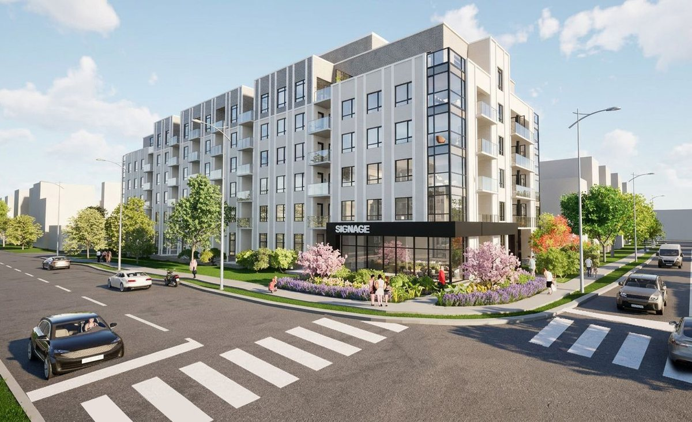
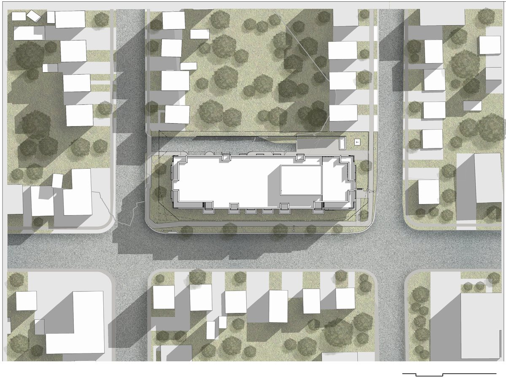

Professional · 2023-2024
Erb Residential
A six-storey residential building in Waterloo with 91 units, 112 parking spaces, and a contemporary material palette.
Project Summary: This project proposes a new mid-rise residential building in a Waterloo neighbourhood characterized by traditional detached brick houses of up to three storeys. The design intention is to create a contemporary and elegant look in the surroundings through the selection of high-end materials and the design of larger, spacious openings. This six-storey building provides 91 residential units and 112 parking spaces.
Responsibilities: Participation in regular meetings with the client to understand the needs and desires for the project, and presentation of design options and progress; Preparation of terms of reference, site analysis, and code research/review to understand the constraints of the site; Elaboration of precedent studies, material research, and presentation of design options to team and the client for feedback/approval; Preparation of context massing, site design and modelling, and building massing and detailed modelling in Revit, and renderings in Twinmotion/Lumion; Preparation and revisions of Schematic Design and Design Development drawing set (site plan, site statistics, floor plans, elevations, cross sections, perspective views) under the supervision of Project Architect for client's approval and to submit for formal application to the city; Participation in regular team meetings with consultants for coordination; Coordination with Interior Design and Construction Management team.



Related projects
Explore adjacent work

Cambridge Highlight
A multi-building residential redevelopment introducing 1,046 apartment units and active street edges on a former industrial property.

Denver's Missing Middle
An evolutionary mixed-income townhouse community for Denver's Globeville neighborhood, designed around modular bays, live/work options, and shared outdoor amenities.

Waterloo Centerpiece
A high-density mixed-use district with seven buildings, thirteen towers, pedestrian-oriented streets, green spaces, and transit connectivity.